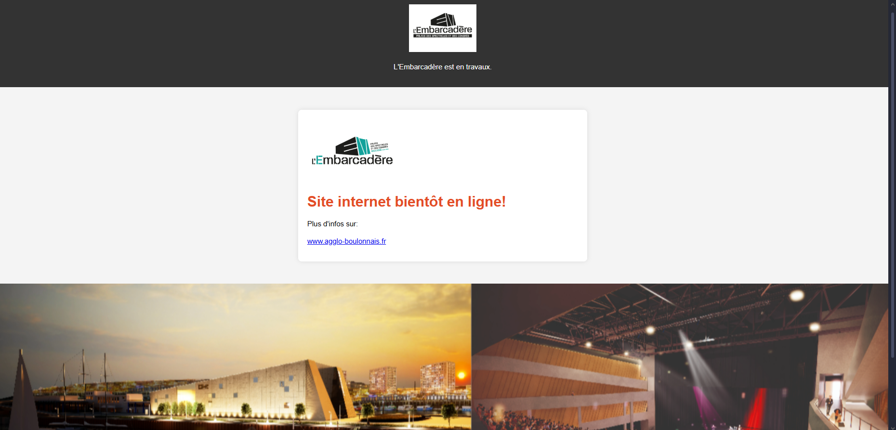
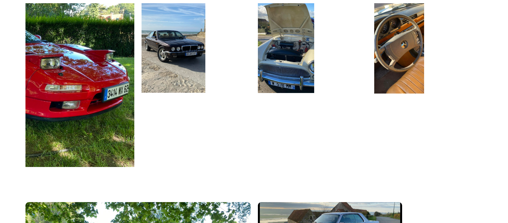

Stages
Stage de première année
-
Mise en place d'un système de gestion des comptes dans un centre de ressources. Les tuteurs peuvent publier des fichiers accessibles en lecture seule par les élèves via un compte global. J’ai utilisé SQL pour gérer ces comptes.
-
Travail sur le centre de ressources pour assurer le partage sécurisé de documents entre tuteurs et étudiants. Problèmes rencontrés pour l'affectation des tuteurs à une formation spécifique.
-
Tri et intégration de sites web sous Laragon pour l’entreprise Opale Auto Retro. Ajout d’une fonctionnalité d'affichage du nom des utilisateurs sur le cahier de texte. Restructuration et automatisation du Trello. Tentative de résolution d’un problème d’affectation de formation.
-
Finalisation de la page récapitulative du cahier de texte et mise en place d'un système de gestion des fichiers avec options de téléchargement, suppression et prévisualisation.
-
Page de Récapitulatif des saisies :
Page de Centre des ressources :
-----------------------TRELLO--------------------------
Stage de deuxième année
-
Développement d’un site principal avec plusieurs pages et boutons fonctionnels. Création d’un site photo avec un slider en JavaScript et un menu déroulant dynamique en PHP permettant d’afficher les images selon leur catégorie.
-
Finalisation du site photo avec une section "Photo du jour". Développement du site de l’atelier informatique détaillant ses services et intégrant plusieurs pages explicatives avec design soigné en CSS.
-
Finalisation du site de l’atelier informatique. Début du développement d’un site répertoriant les archives historiques d’Ambleteuse, avec 18 catégories différentes et une navigation optimisée via un breadcrumb et un header/footer.
-
Finalisation du site d’archives et développement d’un système de gestion dynamique des dossiers et des pages PHP associées. Mise en place d’un système de connexion sécurisé avec hashage de mot de passe et protection contre le brute force.
-
Ajout d’un système de création et suppression de dossiers ainsi que l’upload d’images sous protection d’une connexion sécurisée.
-
Durant cette dernière semaine de stage, j’ai apporté plusieurs améliorations au site. J’ai modifié l’interface en déplaçant le header sur le côté gauche et en intégrant un bouton menu permettant de l’ouvrir et de le fermer pour une meilleure navigation. J’ai également effectué quelques retouches visuelles et optimisations afin d’améliorer l’expérience utilisateur et les performances du site. Enfin, j’ai mis en ligne l’ensemble des sites développés, avec la page principale accessible sous le nom de domaine ambleteuse.net.
-
Site regroupant les autres sites
Site informatique :
Site photo :


Site Histoire d'ambleteuse :
AP
-

-

-
Le cahiers des charges des Jardins intrépides
-
InnovGame était le premier travail de groupe chacun avais sa partie ma partie était de codé le jeu
Le jeu devait être un jeu où les combats se déroulent sous forme de quiz : il fallait répondre correctement pour gagner le combat.
Ceci est le joueur, le personnage que nous incarnons en vue Première personne (donc vue du personnage) et qu'on déplace via les touches ZQSD la caméra se déplace avec le pad ou la souris et le saut est sur la touche espace(Vue du personnage)
Les monstres du jeu, quand ils repérent le joueur le monstre va donc suivre le joueur jusqu'au contact les toucher dois lancer un quizz a 4 réponses aléatoirement choisi
Dans le jeu que j'ai fait, il fallait se déplacer dans des labyrinthe avec des monstres comme vu si dessus, le jeu possède 3 niveau différent qui dont accèssible après avoir trouver et interagis avec les teleporteurs comme affiché si dessous

il fallait sortir du labyrinthe pour gagné la partie, la sortie était représenter de cette façon
Nous avions un groupe pour communiquer et donc faire un travail en projet
-
---------------------Application lourde--------------------------
Diagramme de classes de l'application FFBSQ:
Menu principal de l'application FFBSQ:
Menu gestion des joueurs de l'application FFBSQ:
Menu création des joueurs de l'application FFBSQ:
Menu gestion d'une équipe de l'application FFBSQ:
Menu création d'une équipe de l'application FFBSQ:
Menu gestion des concours de l'application FFBSQ:
Menu gestion des inscription de l'application FFBSQ:
Menu de saisies de match de l'application FFBSQ:
Menu des matchs en cours de l'application FFBSQ:
details d'un match de l'application FFBSQ:
-----------------------Application WEB--------------------------
Page de login de l'application web FFBSQ:
Page de creation de compétition de l'application web FFBSQ:

Page de modification de compétition de l'application web FFBSQ:
Page de gestion de compétition de l'application web FFBSQ:
Page d'ajout de résultat de l'application web FFBSQ:
Page de classement des équipes de l'application web FFBSQ:
-----------------------TRELLO--------------------------
-